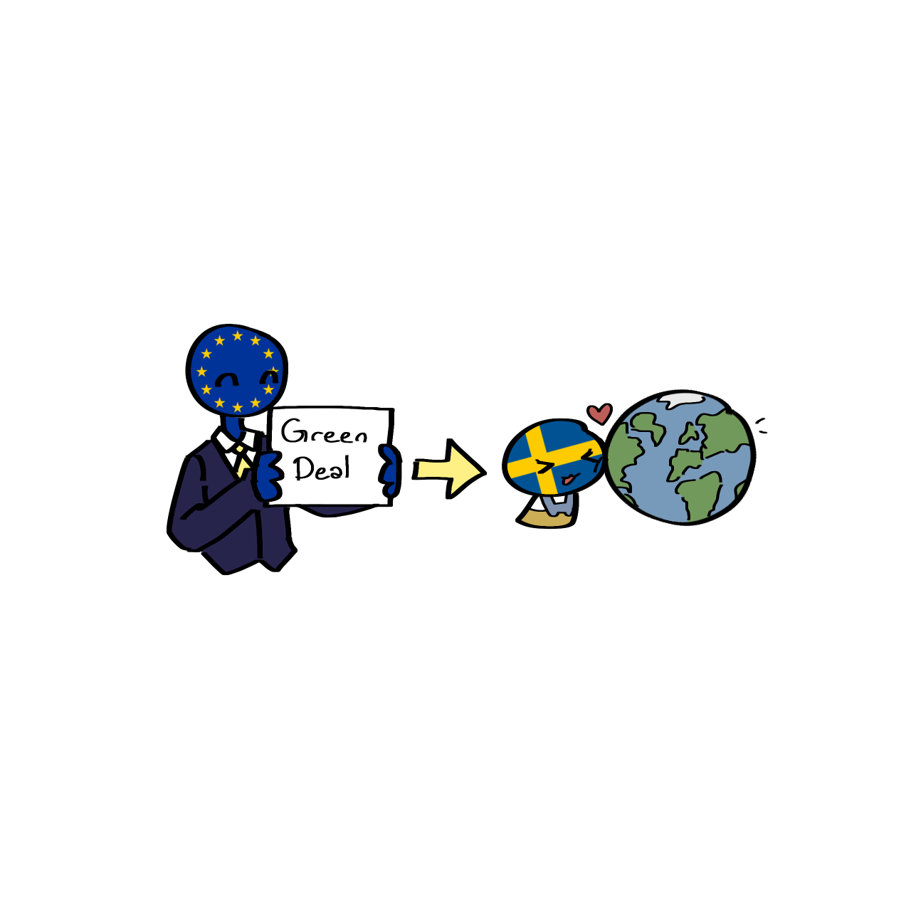

Ziele der EU-Umweltpolitik:
-
European Green Deal
- Europa soll bis 2050 klimaneutral werden
- Es sollen weniger Treibhausgase ausgestoßen und die Umwelt besser geschützt werden
-
Schutz der menschlichen Gesundheit
- Menschen sollen gesünder leben können
- Saubere Luft und sauberes Trinkwasser sind wichtig für die Gesundheit
- Schutz und Verbesserung der Umwelt
-
Die Umwelt soll besser geschützt werden
- Umweltverschmutzung soll verringert und die Natur erhalten werden
-
EU-Biodiversitätsstrategie für 2030
- Tiere, Pflanzen und Lebensräume sollen geschützt werden
- Die Biodiversität Europas soll sich bis 2030 zum Wohle der Natur, der Menschen und des Klimas erholen
